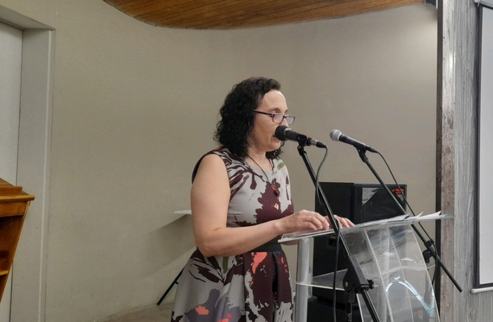
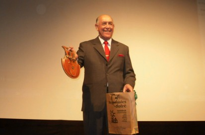
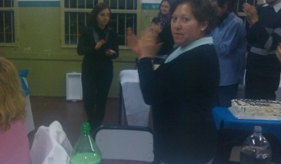
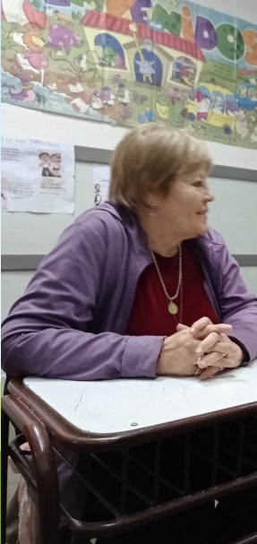

Primer Año
8 Materias- Historia
- Lengua
- Educación Cívica
- Inglés
- Biologia
- Criminalística
- Identificación Humana
- Matemáticas
Un faro de oportunidades educativas en San Luis desde 1987.
Inscribite para el ciclo 2027Fundado en 1987, el Colegio para Adultos Nº 3 "Tomás Baras" es una institución de Gestión Pública enfocada en brindar oportunidades educativas reales y de calidad.
Trabajamos a través de Proyectos de Acción y Situaciones Problemáticas, considerando y redireccionando las necesidades culturales, productivas y sociales de nuestros estudiantes. Buscamos resolver cuestiones integradoras para que nuestros alumnos logren un desarrollo pleno y herramientas para el futuro.
Nuestra currícula cuenta con una fuerte Orientación en Ciencias Sociales. Adaptamos nuestros módulos de aprendizaje a las realidades y tiempos de los adultos.
En un documento de planta permanente de 1991, se observan a 12 docentes, una secretaria y el Director Oscar Sosa. En ese momento, el colegio se denominaba “Centro Educativo de nivel secundario N° 240” (CENS N° 240) y funcionaba en nuestra actual dirección de Pringles 319. Su orientación original era “Perito en Técnicas Policiales”, de nivel medio, con modalidad semi-presencial y a distancia con una duración de 3 años.
Tener el primario completo e integrar la Planta Permanente de la Policía de la Provincia de San Luis.
A lo largo de los años, grandes profesionales han guiado nuestra institución.

Directora
2021 - Actualidad
Directora
1987 - 1990

Director
1990 - 2013

Directora
2013 - 2021

1° Secretaria de la Institución
1987 - 2008
¿Tenés dudas sobre las inscripciones o las modalidades de cursada? Dejanos tu pregunta.
¿Qué documentación necesito llevar para inscribirme a primer año?
Hola Martín. Necesitás fotocopia de DNI, partida de nacimiento y certificado de finalización de estudios primarios.
¿Cuáles son los horarios de cursada para el turno noche?
Pendiente de respuesta
¿Querés terminar tus estudios? ¿Retomar la secundaria? ¿Seguir
creciendo personal y profesionalmente? Este es tu momento. En nuestro
colegio acompañamos trayectorias reales, respetamos tus tiempos y te
ofrecemos un espacio pensado para personas adultas que desean seguir
aprendiendo Animate a dar el paso. Tu título secundario te espera.
Colegio Tomás Baras – Educación de Adultos

Complete Formulario
Una vez completado el formulario, nos pondremos en contacto contigo para informarte sobre el proceso de preinscripción.